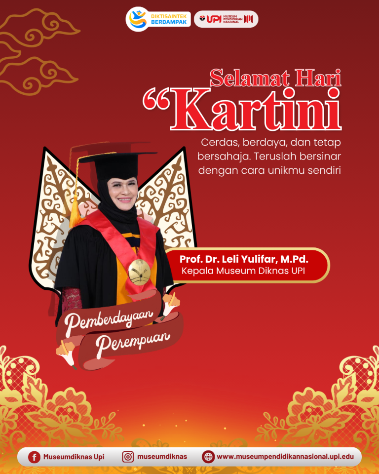
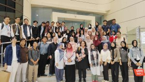
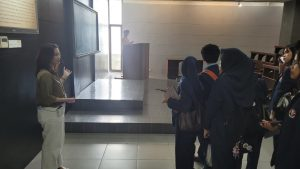
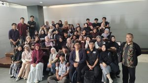
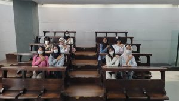
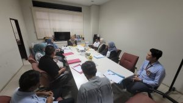

Menjadi Kartini masa kini bukan berarti harus memakai kebaya setiap hari, tapi tentang keberanian untuk...
Baca Lebih Lanjut →
Bandung, 13 April 2026 – Museum Pendidikan Nasional bersama dengan Pusat Unggulan Educational Cultural Sustainability...
Baca Lebih Lanjut →
Bandung, 11 Maret 2026 – Mahasiswa Program Studi Manajemen Industri Katering Universitas Pendidikan Indonesia melaksanakan...
Baca Lebih Lanjut →
Bandung, 11 Maret 2026 – Himpunan Mahasiswa Ilmu Ekonomi dan Keuangan Islam Universitas Pendidikan Indonesia...
Baca Lebih Lanjut →
Museum Pendidikan Nasional UPI menerima kunjungan mahasiswa dari Program Studi Pendidikan Bahasa Inggris, Universitas Pendidikan...
Baca Lebih Lanjut →
Bandung, 4 Maret 2026 – Museum Pendidikan Nasional menggelar rapat internal yang membahas evaluasi kinerja...
Baca Lebih Lanjut →